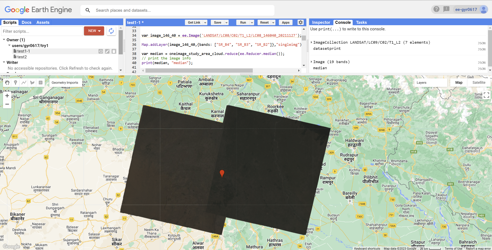
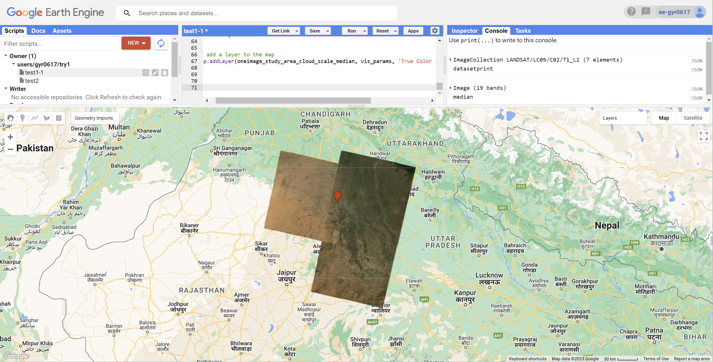
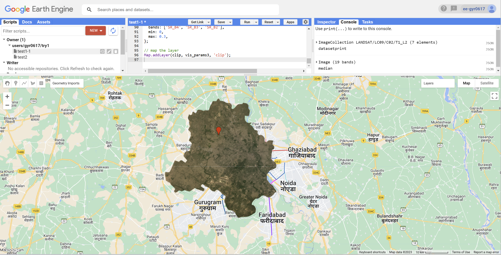
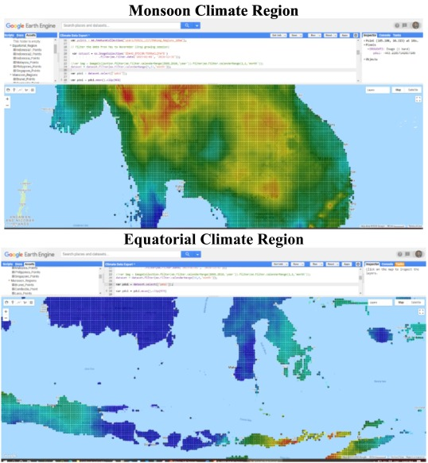

var dataset = ee.ImageCollection('LANDSAT/LC09/C02/T1_L2')
.filterDate('2022-01-01', '2022-02-01');5 Chapter 5 - Google Earth Engine
5.1 Summary
5.1.1 What is Google Earth Engine
- Geospatial processing service
- It permits geospatial analysis at scale
- Process massive datasets
- Store data on servers
- Takes the code we have written and applies it for us
5.1.2 Difference in data name
Image-> raster(has bands);
Feature-> Vector(has geometry and attributes)
Stack-> Collection
Source:pintrest/codeboxx
5.1.3 Pratical
5.1.3.1 Basic
- Load data
- Add it to our map, then the final Landsat 9 here is what the layer will be called on the map.
Map.addLayer(dataset, {bands: ["SR_B4", "SR_B3", "SR_B2"]}, "Landsat 9")- Single images
select a single image from the collection by filtering using the specific date, which you can get from the console window when printing the images within the collection. Landsat (and most other EO datasets) have the date within the file path name.
var oneimage = ee.ImageCollection('LANDSAT/LC09/C02/T1_L2')
.filterDate('2022-04-03', '2022-04-04')
.filterBounds(india); // Intersecting ROI
- Make a function and then calling our collection to the function
// Applies scaling factors in a function
function applyScaleFactors(image) {
var opticalBands = image.select('SR_B.').multiply(0.0000275).add(-0.2);
var thermalBands = image.select('ST_B.*').multiply(0.00341802).add(149.0);
return image.addBands(opticalBands, null, true)
.addBands(thermalBands, null, true);
}
// call our collection to the function and assign it to a new variable
oneimage_study_area_cloud_scale = oneimage_study_area_cloud.map(applyScaleFactors);
// apply the median reducer
var oneimage_study_area_cloud_scale_median = oneimage_study_area_cloud_scale.reduce(ee.Reducer.median());Then we map this result
// set up some of the visualisation paramters
var vis_params = {
bands: ['SR_B4_median', 'SR_B3_median', 'SR_B2_median'],
min: 0.0,
max: 0.3,
};
// add a layer to the map
Map.addLayer(oneimage_study_area_cloud_scale_median, vis_params, 'True Color (432)');- Clip
Clip those images to our current study area, we also used the interactive visulisation box to select my min and max values.
var clip = meanImage.clip(india)
.select(['SR_B1', 'SR_B2', 'SR_B3', 'SR_B4', 'SR_B5', 'SR_B6', 'SR_B7']);
var vis_params3 = {
bands: ['SR_B4', 'SR_B3', 'SR_B2'],
min: 0,
max: 0.3,
};
// map the layer
Map.addLayer(clip, vis_params3, 'clip');

5.1.3.2 PCA
First method I use (part of codes):
Source: ZhiHu
//- PCA
// Principal Components Analysis EXAMPLE
// Load a landsat 8 image, select the bands of interest.
var image = ee.Image('LANDSAT/LC08/C02/T1_L2/LC08_146040_20211127')
.select([ 'SR_B3', 'SR_B4', 'SR_B5']);
// Display the input imagery and the region in which to do the PCA.
var region = image.geometry();
Map.centerObject(region, 10);
Map.addLayer(ee.Image().paint(region, 0, 2), {}, 'Region');
Map.addLayer(image, {bands: ['SR_B3', 'SR_B4', 'SR_B5'], min: 0, max: 20000}, 'Original Image');
// Get some information about the input to be used later.
var scale = image.projection().nominalScale();
var bandNames = image.bandNames();
// Mean center the data to enable a faster covariance reducer
// and an SD stretch of the principal components.
var meanDict = image.reduceRegion({
reducer: ee.Reducer.mean(),
geometry: region,
scale: scale,
maxPixels: 1e9
});
var means = ee.Image.constant(meanDict.values(bandNames));
var centered = image.subtract(means);
// This helper function returns a list of new band names.
var getNewBandNames = function(prefix) {
var seq = ee.List.sequence(1, bandNames.length());
return seq.map(function(b) {
return ee.String(prefix).cat(ee.Number(b).int());
});
};
// This function accepts mean centered imagery, a scale and
// a region in which to perform the analysis. It returns the
// Principal Components (PC) in the region as a new image.
// [START principal_components]
var getPrincipalComponents = function(centered, scale, region) {
// Collapse the bands of the image into a 1D array per pixel.
var arrays = centered.toArray();
});Second method I use:(part of codes)
Source: Andy MacLachlan
var bounds = india.geometry().bounds();
//var clip2 = ee.Image(meanImage_texture)
// scale and band names
var scale = 30;
var bandNames = glcm.bandNames();
var region = india.geometry();
Map.centerObject(region, 10);
Map.addLayer(ee.Image().paint(region, 0, 2), {}, 'Region');
print(region, "india_geometry")
// mean center the data and SD strech the princapal components
// and an SD stretch of the principal components.
var meanDict = glcm.reduceRegion({
reducer: ee.Reducer.mean(),
geometry: region,
scale: scale,
maxPixels: 1e9
});
var means = ee.Image.constant(meanDict.values(bandNames));
var centered = glcm.subtract(means);
// This helper function returns a list of new band names.
var getNewBandNames = function(prefix) {
var seq = ee.List.sequence(1, bandNames.length());
return seq.map(function(b) {
return ee.String(prefix).cat(ee.Number(b).int());
});
};
// This function accepts mean centered imagery, a scale and
// a region in which to perform the analysis. It returns the
// Principal Components (PC) in the region as a new image.
var getPrincipalComponents = function(centered, scale, region) {
// Collapse the bands of the image into a 1D array per pixel.
var arrays = centered.toArray();
// Compute the covariance of the bands within the region.
var covar = arrays.reduceRegion({
reducer: ee.Reducer.centeredCovariance(),
geometry: region,
scale: scale,
maxPixels: 1e9
});
// Get the 'array' covariance result and cast to an array.
// This represents the band-to-band covariance within the region.
var covarArray = ee.Array(covar.get('array'));
// Perform an eigen analysis and slice apart the values and vectors.
var eigens = covarArray.eigen();
});5.1.3.3 Difference in these two methods
The first code, the Landsat 8 imagery is preprocessed to create a composite of the median pixel values
for each band, which is then used to compute the PCA. In the second code, the GLCM texture matrix is
computed directly from the Landsat 8 imagery, and then mean-centered and standardized before PCA is computed.
5.2 Application
- Impacts of droughts and floods on croplands and crop production in Southeast Asia – An application of Google Earth Engine(Venkatappa et al., 2021)
In this study, PDSI data were examined using the GEE during the main crop-growing seasons, May to November for the MCR and October to April for the ECR over the 40 years from 1980 to 2019. The temporal drought conditions in the MCR and ECR were assessed during the crop-growing seasons between 1980 and 2019. Here, dryness refers to droughts conditions and wetness refers to floods as defined by the values of PDSI. JavaScript programming language was used in the GEE to collect the PDSI monthly time series data during the crop-growing seasons in the SEA region. The earth engine filter date function was applied to reduce the PDSI dataset from 1980 to 2019 and generate the PDSI temporal profiles for each MCR and ECR country using international boundaries in the GEE. The generated PDSI profiles by country were computed in the GEE and then, exported outside the GEE for generating seasonal PDSI profiles using Microsoft Excel. Further, the PDSI values were extracted into grid points using the value extraction function by country from 2015 to 2019 in the GEE. When using GEE it is inevitable that we will encounter problems due to network connectivity and network timeouts, but the benefits are online operation, the ability to save to the cloud and the ease of loading data from the library.

5.3 Reflection
This week I have been practising mostly Practical, from simply creating points to implementing Principal Component Analysis. I learnt how to create a GEE project, which is very simple to use, mainly in Javascript, and is extremely convenient because it allows you to search for remote sensing data and geographic data online as well as import local data. When creating points we can point directly from the map and the code is automatically generated, or we can define our own point attributes and coordinates. When practising the code given by the teacher, I encountered two errors, but I managed to solve them after searching for information and consulting with Andy. One of the problems was the definition of a method for principal component analysis, which worked successfully after Andy’s answer. I also tried to find other alternatives before solving the problem, tried to define the bands myself and also ran the code successfully. GEE as an integrated platform is extremely capable of back-end processing, but the complex spatial analysis that can be done is currently limited, and subsequent improvements in this area could be made, which would also assist researchers in secondary development based on the platform. What I have learnt so far is not enough and I will continue to use GEE to complete more remote sensing data analysis in the future.
5.4 Reference
Venkatappa, M., Sasaki, N., Han, P., Abe, I., 2021. Impacts of droughts and floods on croplands and crop production in Southeast Asia – An application of Google Earth Engine. Sci. Total Environ. 795, 148829. https://doi.org/10.1016/j.scitotenv.2021.148829